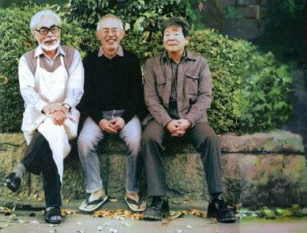
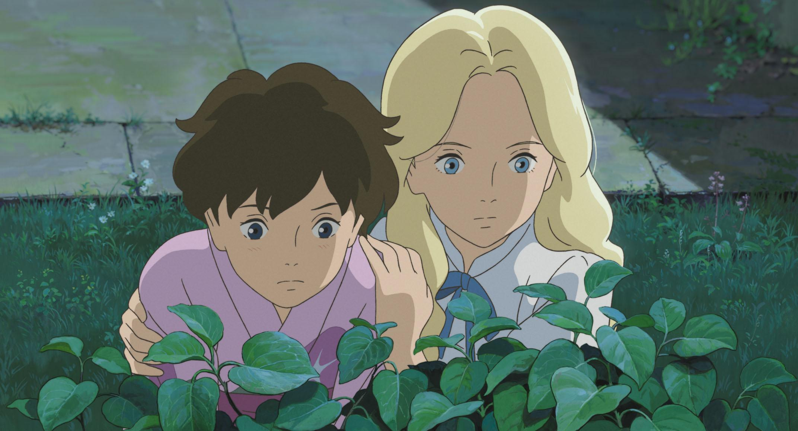
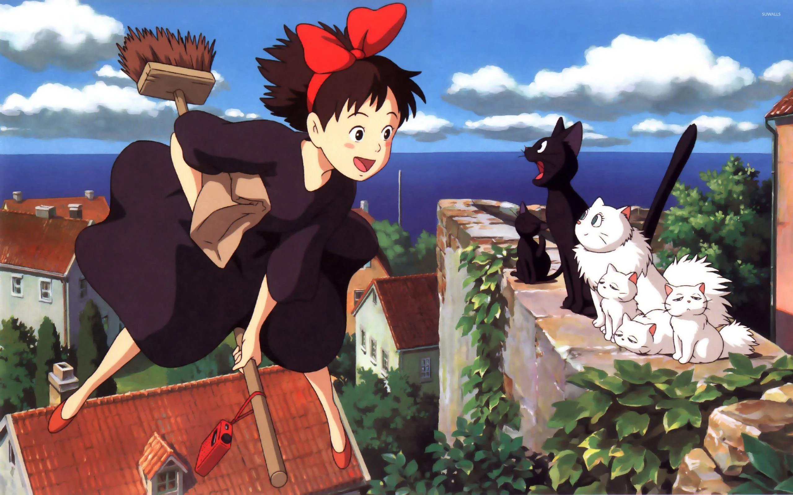
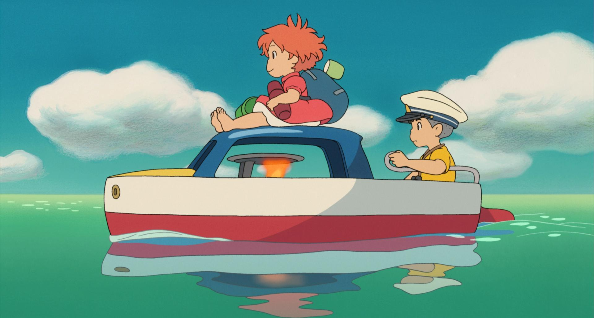
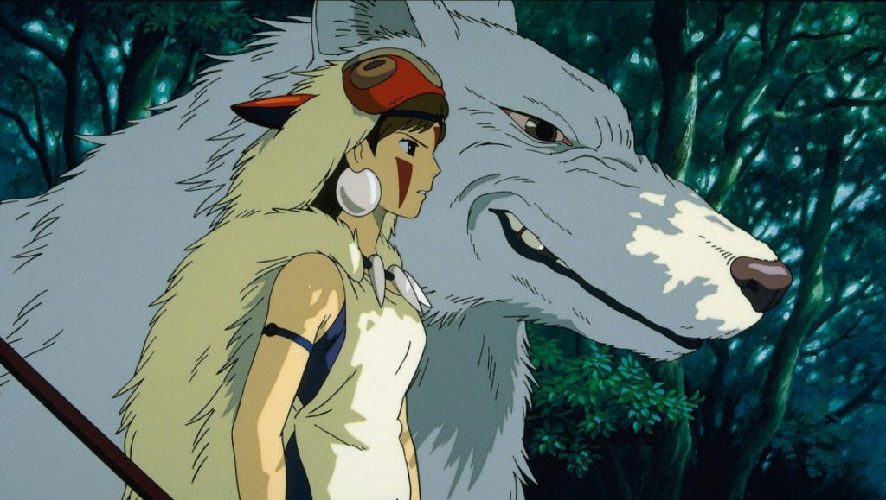
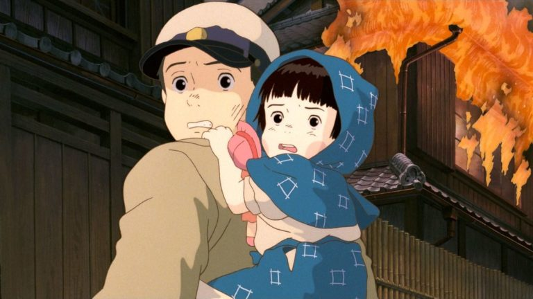
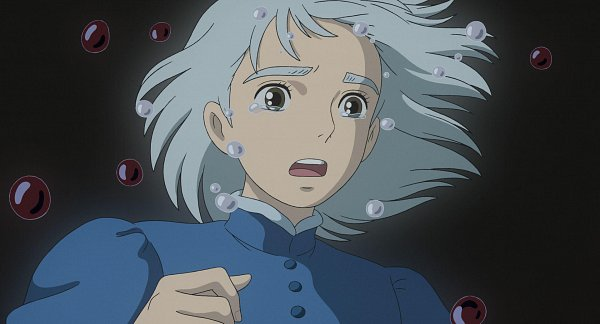
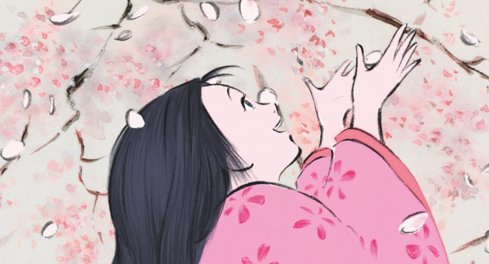
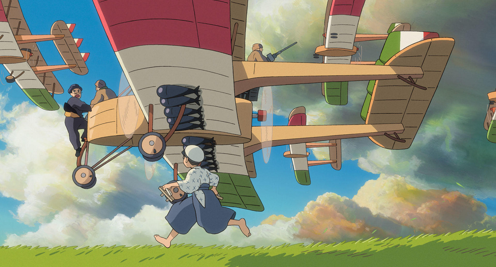

Studio Ghibli
Origem do Studio Ghibli
O estúdio de animação foi fundado pelos diretores Hayao Miyazaki e Isao Takahata, o empresário Yasuyoshi Tokuma e o produtor Toshio Suzuki. Sendo seu nome inspirado no avião italiano Caproni Ca.309 Ghibli, o estúdio lançou 24 filmes e tornou-se um dos estúdios de animação mais conhecidos internacionalmente, o universo fantasioso juntamente com o folclore e cultura japonesa passaram a ter grande influência mundial.


Criação das Obras
As longas animações não são guiadas por um roteiro e a produção é realizada manualmente. As belíssimas obras resultantes de tal tabalho, abordam com graciosidade sobre temas da infância incluindo assuntos como guerras, natureza, cultura, solidão, e tendo como foco as emoções. Seus personagens são retratados por suas emoções, forças, fraquezas e defeitos, com uma atenção especial às persongens femininas, representadas de forma realista e inspiradora, que se diferencia da imagem padronizada de princesas indefesas.








Filmes
Hayao Miyazaki
A
Isao Takahata
A
Tomomi Mochizuki
A
Hiroyuki Morita
A
Destaques
Nausicaä do Vale do Vento foi lançado antes da fundação do estúdio
A viagem de Chihiro ganhou o Oscar de Melhor Filme de Animação em 2003
O estudio possui o Museu Ghibli localizado em Mitaka, Tóquio, e também, um parque temático em Nagakute, Aichi, o Glibli Park não possui brinquedos ou atrações radicais, porém conta com cenários inspirados nos filmes. Durante a construção do parque, Hayao Miyazaki, conhecido por seu engajamento em pautas ambientais, garantiu que nunhuma árvore fosse cortada.
O mais recente filme escrito e dirigido por Hayao Miyazaki, The Boy and the Heron, foi lançado no Japão dia 14 de julho de 2023, e está sendo lançado em diversos outros países no final de 2023, para países da América Latina ainda não há previsão de datas.